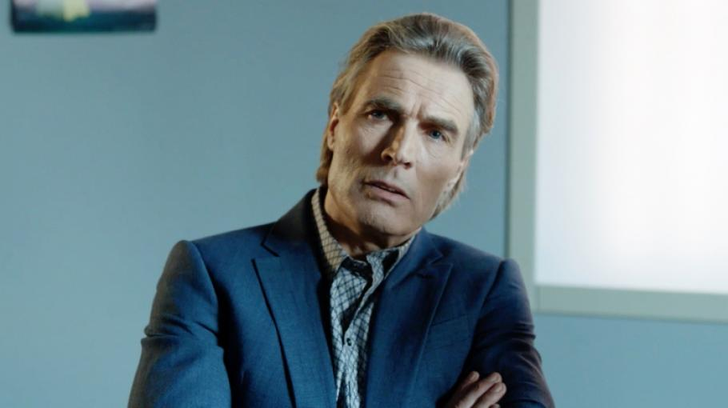

Разследвания за криминална дейност бизнесмен Иво Фотев, стана жертва на показно покушение.
Рано тази сутрин живущите в близост до луксозната къща на разледвания за
корупционни схеми и криминална дейност бизнесмен Иво Фотев били разтърсени
от мощен взрив. Къщата на подземния бос е разрушена до основи. Пожарът е
потушен. Експертни групи все още оглеждат мястото. Предстоят експертизи,
които трябва да потвърдят или отхвърлят хипотезата дали овъгленото тяло е
на Иво Фотев. Службите на гражданска защита и пожарната съдействат на гражданите,
пострадали при произшествието. Към момента се предполага, че бизнесменът е бил сам
в дома си, когато е избухнала бомбата. Припомняме, че Иво Фотев се свърза със сделки
от подземния свят. Преди година бизнесменът беше уличен в крупна финансова измама и опит
да превърне болница "Свети Кирил" в казино. Съдът два пъти отлага делото слещу него, като
през това време Фотев остава под домашен арест. Атентата е извършен в една от къщите
собственост на бизнесмена. Извършителите, както и мотивите им все още остават неясни.
Източници близки до разследващите органи споделят, че най-вероятно става въпрос за
разчистване на сметки в подземния свят.


 Новини/Политика
Новини/Политика
 Времето
Времето
 Наука
Наука